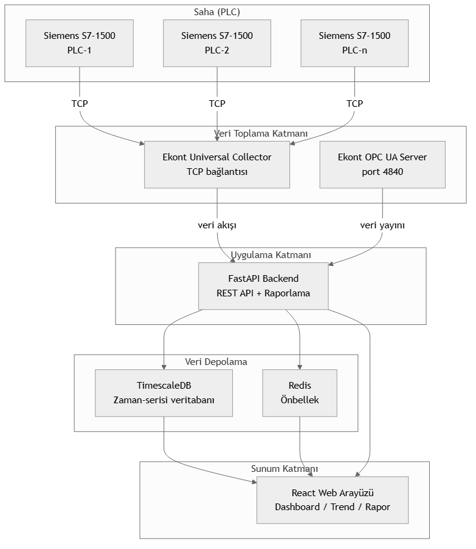

Ekont Smart Scada Reporter, yapay zeka ajanları tarafından doğrudan kullanılıp konfigüre edilebilen yeni nesil bir raporlama sistemidir. Siemens S7-1500 PLC'lerden Ekont Universal Collector ile toplanan endüstriyel veriyi, gelişmiş MCP (Model Context Protocol) desteği sayesinde yapay zeka ajanlarına anlamlı ve yapılandırılmış şekilde sunar. Kullanıcılar web tarayıcısı üzerinden mobil, tablet ve masaüstü cihazlardan sisteme erişebilir, yapay zeka ajanları ise MCP protokolü ile sisteme doğrudan bağlanarak veri sorgulama, analiz ve raporlama işlemlerini gerçekleştirebilir.
opc.tcp://localhost:4840) ile dış sistemlere veri yayınıPOST /api/ai/query)POST /api/ai/anomalies)POST /api/ai/predict)POST /api/ai/reports/generate)scada agent monitor komutu ile periyodik sistem denetimi, anomali taraması ve gecikme kontrolüModern React altyapısı ile geliştirilmiş tamamen web tabanlı kullanıcı arayüzü. Herhangi bir kurulum gerektirmez, yalnızca bir tarayıcı yeterlidir.
| Modül | Özellikler |
|---|---|
| Dashboard | Genel bakış sayıcıları, kişisel izleme listesi, tüm etiketlerde filtreli arama ve sayfalama |
| Trend Analizi | Çoklu etiket ve çoklu Y-ekseni, zoom/pan, sarı kesikli imleç, istatistiksel analiz (ortalama/trend çizgisi/min-max), periyot karşılaştırma, anotasyon desteği, PNG/Excel dışa aktarım, ön ayar yönetimi, zaman dilimi desteği |
| Raporlar | Etiket ve zaman aralığı seçimi, saatlik/günlük/haftalık/aylık toplulaştırma (min/max/avg/toplam/std sapma), Excel/PDF/JSON/CSV çıktı, filtre ön ayarları, koşullu rapor tetikleme |
| Gelişmiş Raporlar | Kullanıcı tanımlı şablonlar, zamanlayıcı ile periyodik otomatik rapor, e-posta dağıtımı, rapor arşivi, toplu indirme, kurumsal kimlik uyumlu başlık/logo/altbilgi |
| Etiket Yönetimi | Etiket listeleme, birim ve açıklama düzenleme, aktif/pasif durumu yönetimi |
| PLC Yönetimi | PLC ekleme/kaldırma, IP/rack/slot yapılandırması, bağlantı durumu izleme |
| Ayarlar | Dil seçimi, kullanıcı tercihleri (ör. trend grafik yüksekliği 300–2000 px) |
| Kullanıcı Yönetimi | Kullanıcı ekleme/düzenleme/silme, rol atama, mikro izin yapılandırması |
admin (tam erişim), operator (okuma/yazma), viewer (salt okunur), reporter (yalnızca raporlama)İhtiyaç: Ham su giriş debisi, kimyasal dozaj miktarları, filtre seviyeleri, çıkış suyu bulanıklık ve klor değerlerinin anlık izlenmesi ve raporlanması.
Ekont Smart Scada Reporter ile Çözüm: - PLC üzerinden tüm sensör verileri Ekont Universal Collector ile toplanır - Dashboard'da giriş/çıkış parametreleri anlık izlenir - Trend grafiği ile geçmiş veri analizi yapılır, AI ajan anormallikleri otomatik işaretler - Günlük ve aylık raporlar AI ajan tarafından doğal dilde özetlenerek hazırlanır - OPC UA ile üst katman SCADA sistemine veri aktarılır - AI ajan MCP üzerinden "Son 24 saatteki pH ortalaması nedir?" sorusuna anında yanıt verir
Takip Edilen Parametreler:
| Parametre | Sensör | Periyot |
|---|---|---|
| Ham su debisi | Debimetre | Sürekli |
| pH değeri | pH sensörü | 5 sn |
| Klor dozajı | Enjeksiyon pompası | 5 sn |
| Filtre seviyesi | Seviye sensörü | 5 sn |
| Çıkış bulanıklığı | Bulanıklık sensörü | 5 sn |
| Rezervuar seviyesi | Ultrasonik sensör | Sürekli |
İhtiyaç: Havalandırma havuzu çözünmüş oksijen (DO) seviyesi, debi, kimyasal dozaj, çamur yoğunluğu ve deşarj parametrelerinin izlenmesi.
Ekont Smart Scada Reporter ile Çözüm: - Havalandırma ünitelerinin enerji tüketimi ve DO seviyeleri eş zamanlı izlenir - Biyolojik arıtma performansı trend grafikleri ile analiz edilir, AI ajan performans düşüşlerini önceden tahmin eder - Deşarj limit aşımlarında anlık uyarı mekanizması, AI ajan otomatik rapor oluşturur - Çevre Bakanlığı raporlamaları için günlük/aylık Excel çıktıları AI ajan tarafından hazırlanır - AI ajan MCP üzerinden "KOİ değeri son 3 ayda limit aşımı yaptı mı?" sorusuna trend analizi ile yanıt verir
Takip Edilen Parametreler:
| Parametre | Önemi |
|---|---|
| Çözünmüş Oksijen (DO) | Biyolojik aktivite için kritik |
| Kimyasal Oksijen İhtiyacı (KOİ) | Deşarj limit parametresi |
| Askıda Katı Madde (AKM) | Deşarj limit parametresi |
| Havalandırma debisi | Enerji verimliliği |
| Çamur yoğunluğu | Çamur yönetimi |
İhtiyaç: Pompaların çalışma durumu, basınç, debi, enerji tüketimi ve arıza kayıtlarının izlenmesi.
Ekont Smart Scada Reporter ile Çözüm: - Her pompa için çalışma/süre/durum bilgisi anlık izlenir - Enerji tüketimi AI ajan tarafından zaman bazlı analiz edilir ve raporlanır - Basınç düşüşlerinde trend analizi ile kaçak tespiti, AI ajan anormal desenleri işaretler - Pompa arıza kayıtları otomatik tutulur, AI ajan bakım zamanı geldiğinde uyarı verir - AI ajan MCP üzerinden "Pompa-2'nin enerji tüketimi geçen aya göre nasıl değişti?" sorusunu yanıtlar
Takip Edilen Parametreler:
| Parametre | Kullanımı |
|---|---|
| Pompa açma/kapama sayısı | Aşınma takibi |
| Çalışma saati | Bakım zamanlaması |
| Enerji tüketimi (kWh) | Maliyet analizi |
| Basınç (bar) | Kaçak tespiti |
| Debi (m³/h) | Verimlilik hesapları |
İhtiyaç: Tesisteki enerji tüketiminin PLC üzerinden okunması, zaman bazlı analizi ve maliyet raporlaması.
Ekont Smart Scada Reporter ile Çözüm: - Enerji analizörlerinden PLC'ye gelen tüketim verileri okunur - Anlık güç, günlük/aylık/yıllık tüketim dashboard'da görüntülenir - Pik tüketim saatleri trend grafiği ile belirlenir - Birim maliyet raporları otomatik oluşturulur
Takip Edilen Parametreler:
| Parametre | Açıklama |
|---|---|
| Aktif güç (kW) | Anlık çekilen güç |
| Reaktif güç (kVAr) | Kompanzasyon takibi |
| Toplam enerji (kWh) | Tüketim takibi |
| Güç faktörü (cos φ) | Verimlilik göstergesi |
| Hat akımları (A) | Yük dengesi analizi |
İhtiyaç: Soğutma kuleleri, chiller grupları ve klima santrallerinin sıcaklık, basınç, debi ve enerji parametrelerinin merkezi izlenmesi.
Ekont Smart Scada Reporter ile Çözüm: - Chiller giriş/çıkış sıcaklıkları ve enerji tüketimleri kaydedilir - Soğutma kulesi fan ve pompa durumları izlenir - HVAC filtre kirlilik seviyeleri takip edilir - Enerji verimliliği (COP/EER) trend raporları oluşturulur
| Katman | Teknoloji | Rolü |
|---|---|---|
| Backend | Python 3.14, FastAPI, Uvicorn | REST API sunucusu |
| PLC İletişimi | Ekont Universal Collector | Siemens PLC'ye doğrudan TCP bağlantısı |
| OPC UA | Ekont OPC UA Server (asyncua) | Harici sistemlere standart veri yayını |
| Veritabanı | PostgreSQL 16 + TimescaleDB | Zaman-serisi veri depolama |
| Ön Yüz | React + Vite | Modern web arayüzü |
| ORM | SQLAlchemy 2.0 (async) + Alembic | Veritabanı yönetimi ve migrasyon |
| Raporlama | openpyxl, WeasyPrint | Excel ve PDF çıktı |
| Kimlik Doğrulama | JWT (OAuth2) | Güvenli erişim kontrolü |
| Yerelleştirme | react-i18next | Çoklu dil desteği (Türkçe / İngilizce) |
| Yetkilendirme | Rol + izin tabanlı | Mikro yetkilendirme, etiket/PLC bazında kısıtlama |
| AI Ajan Protokolü | MCP (Model Context Protocol) | Yapay zeka ajanlarının sisteme doğrudan bağlanması |
| AI Entegrasyonu | Claude, ChatGPT, Gemini ve özel ajanlar | Doğal dil ile sorgulama, anomali tespiti, trend tahmini ve raporlama |
| AI API'leri | FastAPI /api/ai/* | Anomali tespiti, trend tahmini, NL sorgu, rapor oluşturma |
| Ajan CLI | scada agent komut grubu |
İzleme, sorgulama, anomali analizi, tahmin ve servis durumu |
| Altyapı | Docker Compose | TimescaleDB, Redis, Grafana yönetimi |

| Sistem | Entegrasyon Yöntemi | Açıklama |
|---|---|---|
| Üst Katman SCADA | OPC UA | ISA-95 uyumlu veri aktarımı |
| ERP / MES | REST API | JSON tabanlı veri paylaşımı |
| Grafana | PostgreSQL (read-only) | Kurumsal dashboard oluşturma |
| Harici Raporlama | Excel / JSON çıktı | Dosya tabanlı entegrasyon |
| IoT Platformları | OPC UA | Bulut sistemlere veri köprüleme |
| WinCC SCADA | Tag içe aktarma (CSV/Excel) | Mevcut WinCC etiket kataloğunuzu sıfırdan tanımlamadan taşıyın |
Ekont Smart Scada Reporter — Yapay zeka ajan destekli yeni nesil raporlama sistemi.